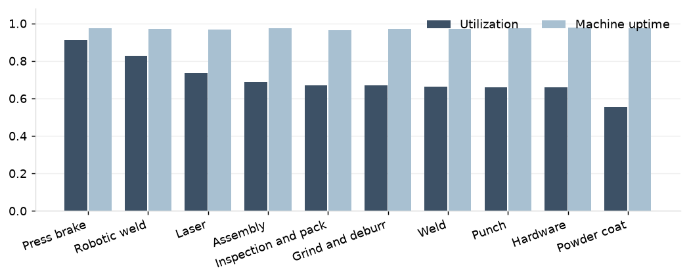
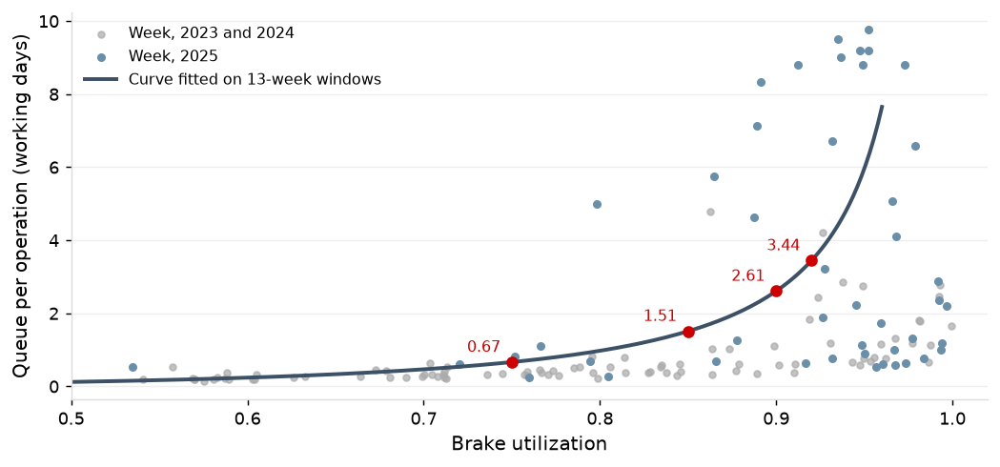
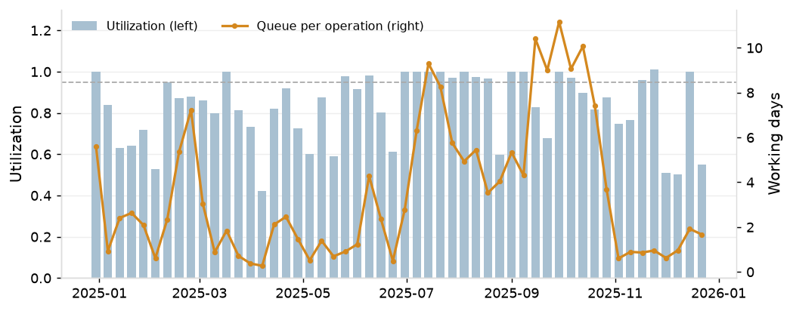

The brakes run at 0.91 of scheduled hours net of downtime, the robotic weld cell at 0.83, the lasers at 0.74, assembly through hardware at 0.66 to 0.69 and the powder line at 0.56. Machine uptime is 0.96 to 0.98 at every work center and does not distinguish the constraint.

B1 and B2 run at 0.922 and 0.919 for the year and 0.937 and 0.937 in Q2 to Q4, with the shortest queues of the five (mean 2.7 and 2.8 days): precision work goes to them first and the hot list sends expedited work to them. B3 to B5 carry the tail: mean 3.7 to 4.1 days and 90th percentile 11.6 to 12.7. Over all hours worked, B5 carries the highest load of the five for the year; in Q2 to Q4 B1 and B2 do.
| Machine | Crewed shifts | Utilization, 2025 | Queue mean | Median | 90th percentile | Utilization, Q2 to Q4 | Queue mean, Q2 to Q4 | Median, Q2 to Q4 | 90th percentile, Q2 to Q4 |
|---|---|---|---|---|---|---|---|---|---|
| B1 | 2 | 0.922 | 2.70 | 0.54 | 9.5 | 0.937 | 1.10 | 0.36 | 3.1 |
| B2 | 2 | 0.919 | 2.81 | 0.75 | 9.5 | 0.937 | 1.21 | 0.42 | 3.0 |
| B3 | 2 | 0.904 | 3.69 | 1.07 | 11.6 | 0.878 | 1.91 | 0.56 | 5.2 |
| B4 | 2 | 0.896 | 4.12 | 1.32 | 12.7 | 0.881 | 2.26 | 0.82 | 6.4 |
| B5 | 1 | 0.928 | 4.08 | 1.77 | 12.0 | 0.907 | 2.05 | 0.98 | 5.9 |
| Robotic weld cell | 1 | 0.826 | 3.64 | 1.67 | 10.0 | 0.834 | 3.93 | 1.74 | 11.0 |
On the fitted curve the brake queue is 0.67 days per operation at 0.75 utilization, 1.51 at 0.85, 2.61 at 0.90 and 3.44 at 0.92; the measured queue is 3.54 at 0.912 for the year and 1.81 at 0.908 in Q2 to Q4. Week by week, the brake queue steps from about 0.5 days below 0.85 utilization to 2.7 above it and does not settle back.

| Brake utilization in the week | Weeks | Mean queue per operation | Median |
|---|---|---|---|
| below 0.80 | 55 | 0.45 | 0.32 |
| 0.80 to 0.85 | 12 | 0.47 | 0.40 |
| 0.85 to 0.90 | 14 | 2.68 | 1.08 |
| 0.90 to 0.95 | 24 | 3.37 | 2.06 |
| 0.95 and above | 33 | 2.41 | 1.31 |
The curve does not describe hardware, grind and deburr, inspection and pack, or the powder line: their queues follow the daily dispatch list and the color schedule, not load.
In Q2 to Q4 the robotic weld cell has the longest queue in the shop: 3.9 days per operation against 1.8 at the brakes, on one shift at 0.83 utilization. It ran at or above 0.95 in 17 of 39 weeks, and enclosures are 78% of its hours.

The powder line runs at 0.56 and still holds jobs 1.03 days on average for the color day; 32% of operations wait a day or more (0.95 days and 30% in Q2 to Q4).
Halving the spread of brake setup time releases 0.8 brake hours a week and cuts the queue on the curve from 3.08 to 2.98 days. The variability at the brakes is in arrivals (daily coefficient of variation 0.50, Mondays 1.77 times the daily mean, the top customer's month-end 1.73 times) and in run time (coefficient of variation 2.14 against 0.89 for setup). This is the spread of setup time, not its mean; the mean is the subject of P4. Second-shift absence is 7% against 3% on first shift.
| Source | Measure | Value, 2025 |
|---|---|---|
| Arrivals: jobs released per working day | coefficient of variation | 0.50 |
| Arrivals: Monday releases over the daily mean | ratio | 1.77 |
| Arrivals: top customer, last three working days of the month over its daily mean | ratio | 1.73 |
| Arrivals: releases per week | coefficient of variation | 0.22 |
| Brake setup time per operation (hours) | coefficient of variation | 0.89 |
| Brake setup actual over standard | coefficient of variation | 0.90 |
| Brake run time per operation (hours) | coefficient of variation | 2.14 |
| Brake setup and run per operation (hours) | coefficient of variation | 1.38 |
| Brake downtime hours per week | coefficient of variation | 0.57 |
| Brake downtime hours per event | coefficient of variation | 0.47 |
| Brake downtime share of scheduled hours | share | 0.03 |
| Absence, first shift: share of scheduled employee-days | share | 0.03 |
| Absence, first shift: daily rate | coefficient of variation | 0.55 |
| Absence, second shift: share of scheduled employee-days | share | 0.07 |
| Absence, second shift: daily rate | coefficient of variation | 1.18 |
The lasers ran at 0.74 for the year and at 0.93 to 0.98 for three weeks in November 2024, with the first-operation queue rising from 0.6 to 4.9 days by mid-December. They reached 0.95 in 5 of 138 full weeks in three years.
The brake queue is set by arrival variability and by load above 0.85, so release leveling and dispatch (P5) are the first levers and reducing the spread of setup time is not one. A second shift on the robotic weld cell is an unstaffed shift on the shop's secondary constraint; P5 tests it and P8 prices it. The color schedule is a scheduling choice to revisit: gray, white and black already run two days a week, and a third day for black is a P5 scenario. Mean setup time at the brakes is P4.
Coverage: 29,031 operations started in 2025, 21,144 in Q2 to Q4; curves fitted on 2023 to 2025. Utilization is machine time (the union of labor transaction intervals on a machine) over scheduled hours net of downtime, Saturday and extended shifts included; uptime is one less downtime over scheduled hours. On crewed weekday shifts only, B1 and B2 read 0.966 and 0.963 for the year.
Queue is the previous operation's end to this operation's first start, operations after the first, less the powder color-day wait; for the lasers it is traveler print to first cut less material wait.
Curve: queue = k x u^(sqrt(2(m+1)) - 1) / (m(1 - u)), m the number of machines, k fitted by least squares on rolling 13-week windows with utilization between 0.3 and 0.98; the windows include the year-end builds. For the brakes R-squared is 0.45 and the rank correlation 0.88 on 13-week windows, against an R-squared of 0.09 on single weeks: a week's queue carries the backlog of the weeks before it. Bands in Table 2 are full five-day weeks by that week's utilization.
Setup spread: each setup time is moved halfway to the mean setup time; the curve scale is multiplied by (arrival dispersion + new squared coefficient of variation of setup and run) over (arrival dispersion + current), where arrival dispersion is the variance over the mean of daily arrivals at the brakes; hours released are the utilization giving the same queue on the new curve, less current utilization, times scheduled hours net of downtime.
| Work center | Machines | Scheduled hours | Machine hours | Downtime hours | Utilization | Uptime | Queue mean | Utilization, Q2 to Q4 | Uptime, Q2 to Q4 | Queue mean, Q2 to Q4 |
|---|---|---|---|---|---|---|---|---|---|---|
| Press brake | 5 | 18,300 | 16,268 | 470 | 0.912 | 0.974 | 3.54 | 0.908 | 0.972 | 1.77 |
| Robotic weld | 1 | 1,992 | 1,598 | 57 | 0.826 | 0.971 | 3.64 | 0.834 | 0.972 | 3.93 |
| Laser | 3 | 10,152 | 7,242 | 329 | 0.737 | 0.968 | 0.738 | 0.967 | ||
| Assembly | 2 | 3,984 | 2,669 | 100 | 0.687 | 0.975 | 1.91 | 0.670 | 0.974 | 1.58 |
| Inspection and pack | 2 | 3,984 | 2,573 | 144 | 0.670 | 0.964 | 0.65 | 0.651 | 0.964 | 0.68 |
| Grind and deburr | 2 | 3,984 | 2,586 | 115 | 0.668 | 0.971 | 0.88 | 0.649 | 0.970 | 0.79 |
| Weld | 6 | 11,952 | 7,693 | 346 | 0.663 | 0.971 | 1.07 | 0.624 | 0.969 | 0.83 |
| Punch | 1 | 1,992 | 1,284 | 49 | 0.661 | 0.975 | 0.635 | 0.976 | ||
| Hardware | 2 | 3,984 | 2,572 | 83 | 0.659 | 0.979 | 0.87 | 0.653 | 0.979 | 0.87 |
| Powder coat | 1 | 2,044 | 1,106 | 53 | 0.555 | 0.974 | 0.56 | 0.537 | 0.977 | 0.53 |
| Machine | Weekday scheduled hours | Saturday and extended hours | Machine hours | Downtime hours | Utilization | Utilization, weekday basis | Uptime | Operations | Utilization, Q2 to Q4 | Weekday basis, Q2 to Q4 |
|---|---|---|---|---|---|---|---|---|---|---|
| B1 | 3,984 | 186 | 3,743 | 110 | 0.922 | 0.966 | 0.974 | 929 | 0.937 | 0.945 |
| B2 | 3,984 | 186 | 3,730 | 111 | 0.919 | 0.963 | 0.973 | 1,009 | 0.937 | 0.945 |
| B3 | 3,984 | 0 | 3,512 | 100 | 0.904 | 0.904 | 0.975 | 1,422 | 0.878 | 0.878 |
| B4 | 3,984 | 0 | 3,472 | 107 | 0.896 | 0.896 | 0.973 | 1,484 | 0.881 | 0.881 |
| B5 | 1,992 | 0 | 1,810 | 43 | 0.928 | 0.928 | 0.979 | 848 | 0.907 | 0.907 |
| Robotic weld cell | 1,992 | 0 | 1,598 | 57 | 0.826 | 0.826 | 0.971 | 423 | 0.834 | 0.834 |
| Work center | Machines (m) | Scale k | R-squared, 13-week | Rank correlation | Utilization range fitted | R-squared, single weeks | Queue at 0.75 | At 0.85 | At 0.90 | At 0.92 |
|---|---|---|---|---|---|---|---|---|---|---|
| Punch | 1 | 0.386 | 0.64 | 0.83 | 0.43 to 0.81 | -0.01 | 1.16 | 2.19 | 3.48 | 4.44 |
| Assembly | 2 | 1.598 | 0.61 | 0.86 | 0.41 to 0.86 | -0.56 | 2.11 | 4.21 | 6.86 | 8.85 |
| Robotic weld | 1 | 0.599 | 0.60 | 0.83 | 0.38 to 0.94 | -0.10 | 1.80 | 3.40 | 5.39 | 6.89 |
| Laser | 3 | 1.676 | 0.53 | 0.82 | 0.52 to 0.84 | -0.17 | 1.32 | 2.77 | 4.61 | 5.99 |
| Press brake | 5 | 1.692 | 0.45 | 0.88 | 0.67 to 0.95 | 0.09 | 0.67 | 1.51 | 2.61 | 3.44 |
| Weld | 6 | 6.455 | 0.27 | 0.67 | 0.43 to 0.79 | -0.49 | 1.96 | 4.59 | 8.06 | 10.70 |
| Powder coat | 1 | 0.522 | -0.41 | 0.33 | 0.40 to 0.61 | -0.16 | 1.56 | 2.96 | 4.69 | 6.00 |
| Grind and deburr | 2 | 1.098 | -5.26 | 0.68 | 0.46 to 0.75 | -13.00 | 1.45 | 2.89 | 4.71 | 6.08 |
| Hardware | 2 | 1.284 | -14.65 | 0.39 | 0.46 to 0.71 | -10.85 | 1.69 | 3.38 | 5.51 | 7.11 |
| Inspection and pack | 2 | 0.954 | -33.70 | -0.61 | 0.46 to 0.73 | -20.86 | 1.26 | 2.51 | 4.09 | 5.28 |
| Work center | Utilization | Queue measured | Queue on curve | Weeks at 0.95 or above | Utilization, Q2 to Q4 | Queue measured, Q2 to Q4 | Queue on curve, Q2 to Q4 | Weeks at 0.95 or above, Q2 to Q4 |
|---|---|---|---|---|---|---|---|---|
| Press brake | 0.912 | 3.54 | 3.08 | 24 of 52 | 0.908 | 1.81 | 2.91 | 21 of 39 |
| Robotic weld | 0.826 | 3.64 | 2.84 | 20 of 52 | 0.834 | 3.90 | 3.01 | 17 of 39 |
| Laser | 0.737 | 1.31 | 1.22 | 4 of 52 | 0.738 | 0.91 | 1.22 | 3 of 39 |
| Assembly | 0.687 | 1.91 | 1.48 | 11 of 52 | 0.670 | 1.58 | 1.36 | 5 of 39 |
| Inspection and pack | 0.670 | 0.65 | 0.81 | 0 of 52 | 0.651 | 0.68 | 0.73 | 0 of 39 |
| Grind and deburr | 0.668 | 0.88 | 0.92 | 2 of 52 | 0.649 | 0.79 | 0.84 | 0 of 39 |
| Weld | 0.663 | 1.07 | 1.03 | 3 of 52 | 0.624 | 0.83 | 0.78 | 1 of 39 |
| Punch | 0.661 | 0.76 | 0.75 | 10 of 52 | 0.635 | 0.44 | 0.67 | 7 of 39 |
| Hardware | 0.659 | 0.87 | 1.03 | 0 of 52 | 0.653 | 0.88 | 1.00 | 0 of 39 |
| Powder coat | 0.555 | 0.56 | 0.65 | 0 of 52 | 0.537 | 0.53 | 0.61 | 0 of 39 |
| Week starting | Working weekdays | Laser utilization | First operations started | First-operation queue, mean | 90th percentile |
|---|---|---|---|---|---|
| 2024-11-04 | 5 | 0.73 | 82 | 0.56 | 1.8 |
| 2024-11-11 | 5 | 0.98 | 62 | 1.90 | 4.6 |
| 2024-11-18 | 5 | 0.95 | 114 | 2.54 | 6.4 |
| 2024-11-25 | 3 | 0.93 | 27 | 1.37 | 5.6 |
| 2024-12-02 | 5 | 0.89 | 126 | 3.96 | 10.3 |
| 2024-12-09 | 5 | 0.94 | 107 | 2.85 | 7.9 |
| 2024-12-16 | 5 | 0.84 | 113 | 4.95 | 13.6 |
| Period | Brake utilization | Queue on the curve | Queue with setup spread halved | Utilization giving the same queue | Brake hours a week released |
|---|---|---|---|---|---|
| 2025 | 0.912 | 3.08 | 2.98 | 0.915 | 0.8 |
| 2025 Q2 to Q4 | 0.908 | 2.91 | 2.81 | 0.911 | 0.9 |
| Input | Value |
|---|---|
| Setup time per operation, coefficient of variation | 0.95 |
| Setup and run per operation, squared coefficient of variation | 1.91 |
| The same with setup spread halved | 1.77 |
| Daily arrivals at the brakes, variance over mean | 2.16 |
| Curve scale k | 1.692 |
| Curve scale with setup spread halved | 1.635 |
| Setup share of brake hours | 37.2% |
| Scheduled brake hours a week net of downtime | 343 |